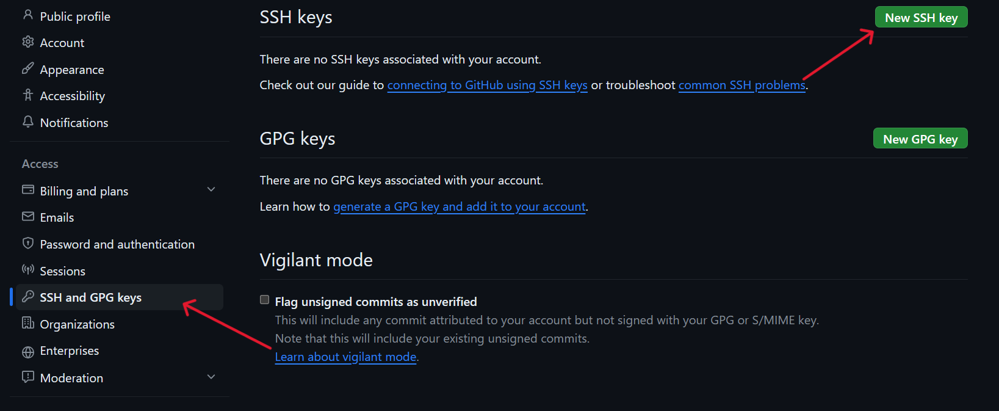
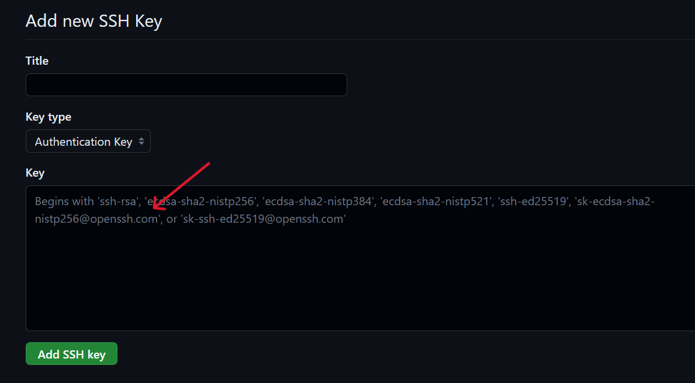

git使用
Table of Contents
前言
git 是一个十分强大的远程项目管理的系统，对于开发者来说十分重要，它的版本管理功能也十分强大，而且存储空间也有 1GB，还算挺大的。
本人曾在一次事故中磁盘损坏导致丢失了自己做的项目，熬夜半年多完成的心血，很心痛。。。
所以在这里告诫大家， 一定要做好备份
SSH与github
SSH（安全外壳协议，Secure Shell 的缩写）是建立在应用层基础上的安全协议。SSH 是目前较可靠，专为远程登录会话和其他网络服务提供安全性的协议，利用 SSH 协议可以有效防止远程管理过程中的信息泄露问题。简单来说，SSH就是保障你的账户安全，将你的数据加密压缩，不仅防止其他人截获你的数据，还能加快传输速度。
一般来说，安装 git bash 之后实际上是自带 SSH 的，所以可以检验一下，在终端输入指令 ssh 会显示出 usage 的内容，那就是装好了，有问题的话，可以自行百度一下。
没问题了就可以输入指令 ssh-keygen -t rsa ，使用 RSA 算法生成密钥，然后，如下
其中 红色圈里面是输入保存的地址，蓝色圈里输入的是 passphrase，可以不输入，直接回车就行。最终去你保存的地址找到它
接下来我们要做的事情就是把公钥 id.pub 的内容添加到 GitHub。复制公钥 id.pub 文件里的内容，你可以通过目录找到 id.pub 文件的位置，打开复制里面的内容。（文件名是与上述操作中文件名称有关，我的设置的路径是 E:\id，所以相应的文件名就是 id）
之后进入github的主页，进入设置（settings），然后找到 SSH and GPG keys，点击 New SSH key，创建一个新的 SSH

将在文件 id.pub 中复制的内容，粘贴到图下的 key 中，然后点击 Add SSH key，就好了

之后，在终端中输入 ssh -T [git@github.com](mailto:git@github.com) 进行检验，第一次会有一个询问，只要回答 yes 就可以了，出现提示 successfully authenticated 就表示绑定成功。
git 命令
HEAD
指的就是 ../HEAD 文件，存储着当前工作空间所处的某次 commit
HEAD 是当前分支引用的指针，它总是指向某次 commit，默认是上一次的 commit。 这表示 HEAD 将是下一次提交的父结点。 通常，可以把 HEAD 看做你的上一次提交的快照。当然 HEAD 的指向是可以改变的，比如你提交了 commit，切换了仓库，分支，或者回滚了版本，切换了 tag 等
环境
git config --global item val设置全局参数，其中item就是需要设置的项，val就是设置的值git config --list查看环境参数列表，包括全局参数列表git config --global --list查看全局参数列表git config item查看对应item的值
初始化
git init初始化仓库
状态
git status查看工作区和暂存区的状态git status -s输出更加简洁
下载仓库
git clone [-b branch_name] https/ssh下载代码，可以指定该仓库的分支，默认为主分支git pull从远程仓库更新到本地仓库git fetch从远程仓库获取最新修改，用户在检查了以后决定是否合并到工作本机分支中
提交
git add [file1] [file2] ...将对应文件添加到暂存区git add [dir]将对应目录添加到暂存区git add .将当前目录下所有文件添加到暂存区，实际上就是目录.git commit -m "message"将暂存区的文件提交到本地仓库中，需要注意的是，一定要写message，不然提交会失败git commit -a不需要执行git add指令，直接将所有更改提交到本地仓库git commit -am "message"不需要执行git add指令，直接将所有更改提交到本地仓库git push推送，将本地仓库推送到远程仓库，会进行对比操作，默认会推送到当前的分支git push <远程主机名> <本地分支名>:<远程分支名>将本地的分支版本上传到远程仓库并且合并，将本地分支推送到对应主机的远程分支处git push --force当本地版本与远程版本有差异，但又需要强制推送，可以使用--force参数
分支操作
git branch查看本地分支git branch -v查看本地分支和上次提交的信息git branch -vv查看本地分支和上次提交的信息以及本地和远程分支的关系git branch -vv -a查看本地分支和上次提交的信息以及本地和远程分支的关系和远程分支git branch -r查看远程分支git branch -a查看所有分支git branch branch_name创建本地分支git checkout -b branch_name创建本地分支并且切换到该分支git branch -d branch_name删除本地分支git push <远程主机名> <本地分支名>:<远程分支名>创建远程分支git push <主机名> --delete <分支名>删除远程分支git push <主机名> -d <分支名>删除远程分支git push <主机名>:<分支名>删除远程分支git merge <branch>合并指定分支到当前分支中git rebase <base> <topic>将主题分支topic变基到目标分支base上git switch <branch>用于更清晰地切换分支。与git checkout类似，但提供了更清晰的语义和错误检查git switch -c/--create <new_branch>用于创建一个新分支new_branch并且立即切换到新创建的分支git switch -快速切换回前一个分支，无需记住分支名称git switch <option> <commit_hash>将工作目录切换到指定提交commit_hash的状态，处于分离HEAD的状态-d/--detach选项可以使切换到某个提交的操作更明确，即使存在同名分支也不会切换到分支上-c选项创建新分支并立即切换到该分支-f/--force选项可以强制执行切换操作，即使存在未提交的更改
远程操作
git remote列出当前仓库中已经配置的远程仓库git remote -v列出当前仓库配置的远程仓库，并且显示出其 urlgit remote add <remote_name> <remote_url>添加一个新的远程仓库，指定一个远程仓库的名称和 url，并将其添加到当前仓库中git remote rename <old_name> <new_name>将已经配置的远程仓库重命名git remote remove/rm <remote_name>从当前仓库中删除指定的远程仓库git remote set-url <remote_name> <new_url>修改指定远程仓库的 urlgit remote show <remote_name>显示指定的远程仓库的详细信息，包括 url 和跟踪分支
恢复版本操作
git reset [--soft | --mixed | --hard] [HEAD]用于回退版本，可以指定回退某一次提交的版本，回退之后，最新版本就被删除了HEAD当前版本HEAD^上个版本HEAD^^上上个版本HEAD...以此类推HEAD~0当前版本HEAD~1上个版本HEAD~2上上个版本HEAD...以此类推--soft用于回退到某个版本--hard参数撤销工作区中所有未提交的修改内容，将暂存区与工作区都回到上一次版本，并删除之前的所有信息提交--mixed为默认，可以不用带该参数，用于重置暂存区的文件与上一次的提交(commit)保持一致，工作区文件内容保持不变
git revert <commit_id>用于撤消版本，将指定的commit_id的提交的内容从当前分支上撤除git revert HEAD撤销对应的版本HEAD撤销前一次commitHEAD^撤销前前一次commit
区别
git revert是用一次新的commit来回滚之前的commit，git reset是直接删除指定的commit- 在回滚这一操作上看，效果差不多。但是在日后继续
merge以前的老版本时有区别。因为git revert是用一次逆向的commit抵消之前的提交，因此日后合并老的branch时，导致这部分改变不会再次出现，但是git reset是之间把某些commit在某个branch上删除，因而和老的branch再次merge时，这些被回滚的commit应该还会被引入 git reset是把HEAD向后移动了一下，而git revert是HEAD继续前进，只是新的commit的内容和要revert的内容正好相反，能够抵消要被revert的内容
追溯文件修改记录
git blame filename追溯一个指定文件的历史修改记录，能显示任何文件中每一行最后一次修改的提交记录git blame -L n1,n2 filename使用-L参数来指定追溯文件的行数范围git show [options] <object>用于显示各种类型的对象，对于提交，它显示日志消息和文本差异，对于标签，它显示标签消息和引用对象git show commit_id用于查看某次提交的详情，使用git log指令查看提交日志，可以看到对应的commit_idgit show tag显示对应标签的详情，使用git tag来获得对应的taggit show commit_id filename查看某次提交中某个文件的详情git diff [file]比较文件在暂存区和工作区的差异git diff --cached/--staged [file]显示暂存区和上一次提交的差异git diff [first-branch]...[second-branch]显示两次提交之间的差异
stash 操作
git stash会把所有未提交的修改（包括暂存的和非暂存的）都保存起来，用于后续恢复当前工作目录，stash 是本地的，不会通过git push命令上传git stash pop命令恢复之前缓存的工作目录，将缓存堆栈中的第一个 stash 删除，并将对应修改应用到当前的工作目录下git stash apply将缓存堆栈中的 stash 多次应用到工作目录中，但并不删除 stash 拷贝git stash list查看现有的 stashgit stash drop [stash_name]移除对应的 stashgit stash clear删除所有缓存的 stashgit stash show [stash_name]查看指定的 stash 的 diffgit stash show [stash_name] -p/--patch查看指定的 stash 的全部 diffgit stash branch branch_name从存储的工作中创建一个分支git stash -u可以缓存 untracked 文件git stash -a可以缓存当前目录下的所有修改
注意
默认情况下，git stash会缓存下列文件：
- 添加到暂存区的修改（staged changes）
- git 跟踪的但并未添加到暂存区的修改（unstaged changes）
但不会缓存一下文件：
- 在工作目录中新的文件（untracked files）
- 被忽略的文件（ignored files）
但是可以使用
其它一些操作
git remove/rm --cached xxx从远程版本库中删除文件，但是不删除本地系统和工作目录中的文件git mv令用于移动或重命名一个文件、目录、软连接，使用与 Linux 中的mv指令类似git clean options <path>从工作目录中/指定路径下删除所有没有tracked，没有被管理的文件-n显示将要被删除的文件-f强制运行-d删除未被添加到 git 路径中的文件（将 .gitignore 文件标记的文件全部删除）-x删除没有被 track 的文件
git log [<options>] [<since>..<until>] [[--] <path>...]主要用于查看 git 版本演变历史（也就是提交历史），同时根据追加的参数和选项不同，也会有不同的展示效果，太过于复杂了，可以看看 git log
gitignore
作用
.gitignore 文件位于工作区的根目录中，用来指定忽略的文件，从而实现忽略一些不重要的文件，从而减少整个项目占用的空间（毕竟 github 仓库最大 1GB）
工作原理
在任何当前工作的 git 仓库中，每个文件都被做上了标记：
- 追踪的（tracked）- 这些是 git 所知道的所有文件或目录。这些是新添加（用 git add 添加）和提交（用 git commit 提交）到主仓库的文件和目录
- 未被追踪的（untracked） - 这些是在工作目录中创建的，但还没有被暂存（或用 git add 命令添加）的任何新文件或目录
- 被忽略的（ignored） - 这些是 git 知道的要全部排除、忽略或在 git 仓库中不需要注意的所有文件或目录。本质上，这是一种告诉 git 哪些未被追踪的文件应该保持不被追踪并且永远不会被提交的方法
所有被忽略的文件都会被保存在 .gitignore 文件中，它是一个纯文本文件，包含了项目中所有指定的文件和文件夹的列表，这些文件和文件夹是 git 忽略的
创建
直接在工作区的根目录中创建文件即可
书写
filename直接忽略工作空间内所有名为filename的文件/文件夹dir/filename忽略dir目录下的名为filename的文件/文件夹。这个dir一般为相对路径，相对于.gitignore的路径dir/忽略dir目录下的所有文件/文件夹- 正则表达式，所有符合正则表达式的匹配都会被忽略
xx*以xx开头的文件/文件夹xx.*所有带有后缀的文件/文件夹*.xx所有以.xx文件扩展名结尾的文件
!filename当这个文件名匹配到其它的忽略项时，可以使用该语句来取消忽略
注意事项
.gitignore 只能忽略没有提交或者上传的文件，当已经提交/上传了的话，只是不会再更新对应的文件了，已经提交/上传的依旧会保存，这个需要注意
一些其它注意事项
创建一个新仓库
-
方法1 直接在本地创建，然后发布到远程端，比较方便
-
方法2 在远程端创建好，然后在本地端与之绑定
-
方法3 在远程端创建好，然后直接下载到本地端使用
遇到的一些奇怪的问题
can’t push refs to remote重新建立一个分支之后就可以向那个分支提交，之后有需要可以合并分支，但是好像有其它方法，忘记了。。。